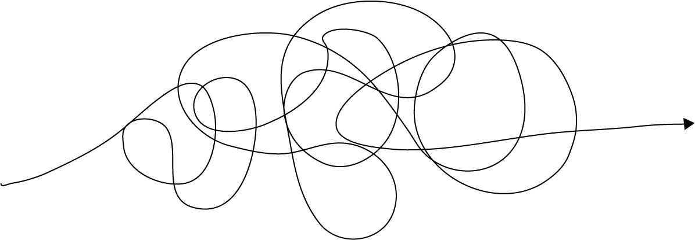

Hire Me
I'm David — I'm on a mission to help others see things
"differently" through the power of creativity, play, and
storytelling.
david@davidianshaw.com
Grab a cup of coffee, or even a beer. Prepare to be entertained - this could take a while.

I’m kind of a late bloomer. Last October I turned 51 and have been working since I was 15 – starting off where most teenagers do, Baskin and Robbins serving ice cream. Let’s just say it takes a long time for some people to figure out what they are not only good at, but what they want to do with their life.
I grew up on the east coast, but never felt like I fit in to the rush-n-go culture. As a young kid, I became conscious about the delicate balance in our world that all life exists. Seeing all the trash on the sides of roads, in forests, and streams made me sad. I couldn’t understand how people could just discard their garbage like it didn’t matter. I wanted them to see the impacts of that wrapper they just threw on the ground. Especially how it impacts quality of life including ours. I didn’t know it then, but I was on the path to lead change for good.
At the same time, my creative temperament would sometimes direct me to activities that most of the popular kids turned their noses up at. Art, LEGO, and at the time, computers. It was the beginning of the computer age – my first computer being one my dad brought home from GE where he worked. A suitcase with all kinds of electronic components. The crown jewel was the 8 segment LEDs that lit up.
Adults need play too. It's how we learn, solve problems, etc.
1984 provided me with a big interruption on my path. A move 3000 miles west to Portland Oregon changed everything. Talk about culture shock. The change was really hard at first. But, over time I found my groove and realized that west coast culture “fit” me. Chill and relaxed, low key. I also began to see the amount of people that cared as much as I did about our planet.
High school provided ample opportunities to dive into my creativity.
This innate interest led me to continue my path of empathy for our house by studying Environmental Science in college. At the same time, I found myself immersed in all thing’s media and art. I got involved with KBVR, the local college radio station. I discovered a love for storytelling and creative problem solving. I learned how I could use creative media as tools to tell stories. I was so excited, I started doing TV weather for the local student run news channel.
For the first time a light bulb moment went on for me – I realized how I could be passionate about the environment and help others through creatively addressing problems and communications.
After graduation in 1993, my focus shifted from my passion for storytelling to my career, and eventually marriage and kids. Like so many people, my dreams took a backseat.
My first gig out of school wasn’t working in journalism or on environmental issues. Instead, I got a job with a computer peripheral manufacturer. The tech industry was booming. I cut my teeth doing Tech Support. The job required me to “translate” technical concepts to people who didn’t have a background with technology. I had to be super creative in the way I communicated with these tech noobies.
As the years went by, these creative skills would interlace throughout my career. Eventually I landed in a nascent area that became modern day “User Experience Design”. I was working at Nike when this industry started growing. At the time the work was very focused on people.
As the field matured, it shifted into a more data driven approach -- establishing metrics as the indicators of business success. Because of this shift, the human-to-human translation and creativity piece that I loved so much vanished. It no longer aligned with my interests.
That change in focus led me to jump ship and move to Intel. Here I found a role that allowed me to do more of the things I was passionate about. Interestingly, through some work I did inside Intel Labs, I was connected to a team in HR looking at the Future of Work. To my surprise, a role opened on the Work Practice Innovations team and was asked to join. It was here that I began a journey back into being a change agent. I spent time at innovation industry events talking about the new areas our team was exploring and trying to push the needle in.
At Intel, I saw my job to inspire creativity and push the limit of what's possible.
As a way to do things “differently”, I produced a weekly video to show our accomplishments to our senior leaders. Through serendipity, I met a small group of video producers at Intel. The connect opened an opportunity to become a presenter and host another weekly show on the Intel Software YouTube channel called “AI News”.
I encountered many opportunities at Intel. For the past 12 years, I have worked in many roles including as a company “freelancer”, working in various business groups to help improve communication and business understanding. Currently I am part of a team in Intel’s Data Center Group to help accelerate cultural change.
This role became essential in honing my creativity and
change leadership skills. As I started doing many different things
that were
not typical corporate, the word spread internally. I
became the go-to person
for designing and developing ideas – specifically and producing
short,
professional videos to explain company initiatives to employees.
The fire began
to burn bright again. I was excited to get out of bed each day.
Educating
people was a way to make change for good. Although I realized
there was still
so much to learn. I wanted to become a better storyteller to
affect change.
Recently on vacation I had time to reflect on my personal path. I feel that I am beginning to outgrow the company I have worked at for so long. With so many organizational changes, creative friends moving on, I’m afraid that my time on this planet is running out. I want to do something bigger with my life. Enter the Creativity and Change Leadership Certificate at Buffalo State. I see the certificate as a professional and personal development goal. I’m looking for a framework for leading creative change and telling stories across multiple platforms.
As I get older in age, my dream has become more focused through my many career paths and experiences. I hope to influence change via creativity and communication to tell deeply human stories about culture, the environment, and ways for us to do good. In fact, one day I hope to be a motivational speaker that focuses on personal development, the affect we have on our environment, and telling the stories that matter. I want to lead some type of social change. I don’t know what this looks like yet, but I am confident that this program will help me reach this goal.
Tattooed on my arm I have a Native Hawaiian proverb I heard in my travels there: Aloha ‘Aina, Malama ‘Aina. Loosely translated It means “love the land, respect the land.” This is something our modern culture has forgotten. I would be honored and grateful to be considered for this program to help people remember we are one people, one planet. We’re all connected. My kids are counting on me. And their kids. And their kids.